The front door sets the mood before anyone even rings the bell, and an Easter wreath does more of that work than most people give it credit for. It shows attention to detail, adds real warmth, and makes a home feel noticeably more welcomed into the season.
What separates a genuinely polished wreath from a cluttered one comes down to a few things: real color harmony instead of just grabbing every pastel in sight, some actual texture to add depth, and a clear focal point that keeps the whole design from feeling scattered.

What Makes a Wreath Actually Pinterest-Worthy
Color harmony, real texture, and one clear focal point are the three things that separate a styled wreath from a cluttered one. Skip any of those and the design starts to feel unfinished no matter how much is actually on it.
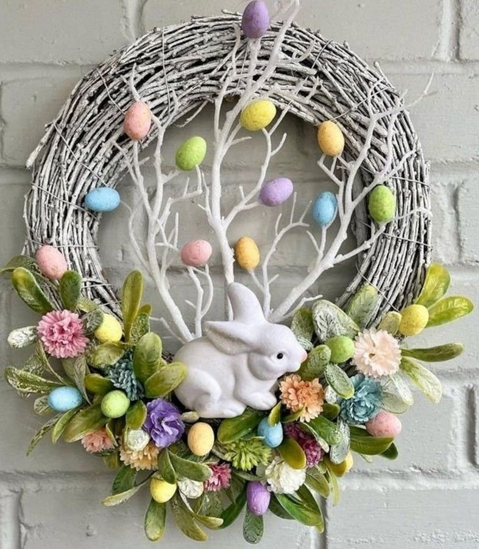
16 Easter Wreaths Worth Hanging
1. Luxe Gold and White
To open the list with something elevated, this wreath combines white florals and soft greenery with subtle gold accents, a metallic egg detail here, a thin gold frame base there.
Gold catches light beautifully, elevating the entire design without ever screaming for attention.
Keeping the gold refined rather than flashy is what separates this from looking overdone, restraint is what makes it read as genuinely expensive.
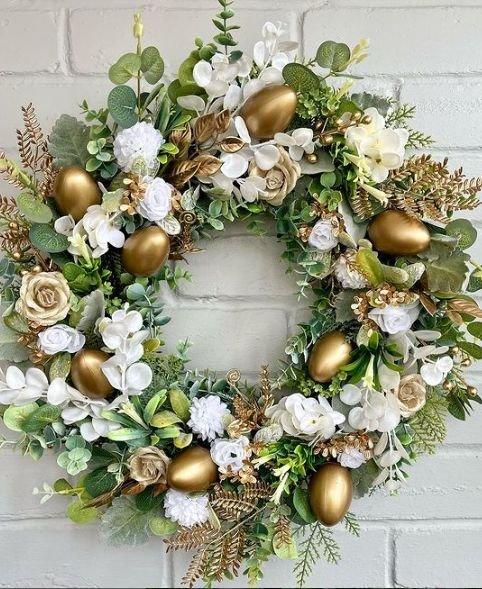
2. Bunny Silhouette Statement
This one makes its statement through restraint rather than volume. A large wooden bunny cutout anchors the center, surrounded lightly with florals and greenery instead of filling the whole base.
The bunny becomes the art itself, rather than one decoration lost among many others.
It's a strong pick for anyone who wants something clearly Easter-themed without any risk of visual clutter.
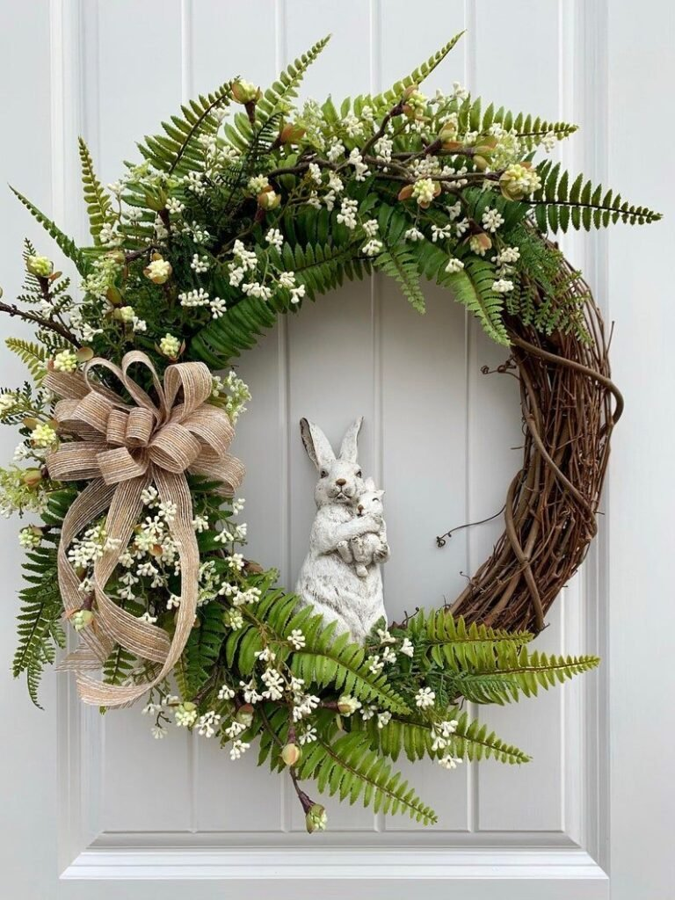
3. Gingham Ribbon
Sometimes the ribbon really does make the whole wreath. A simple greenery base, topped with an oversized gingham bow in pastel pink, blue, or yellow, left to cascade slightly down one side.
The greenery base can stay the same year to year while the ribbon changes, a small, smart way to refresh the look without starting over.
It's an easy way to save money on future seasonal swaps while still getting a genuinely new look each time.
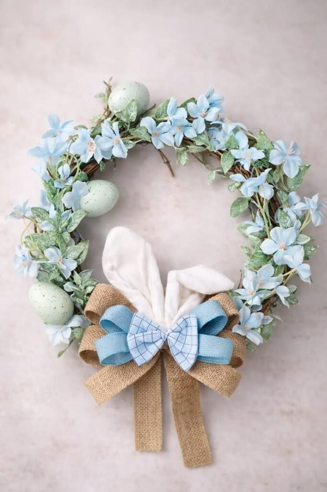
4. Speckled Egg and Hydrangea
Hydrangeas always read as a little luxurious on their own. Paired with speckled eggs, the combination becomes pure spring.
Large hydrangea blooms in white or pale blue, with speckled eggs scattered evenly around the base, add real texture.
The hydrangeas fill space beautifully on their own, which means the wreath makes a real impact without ever feeling overcrowded.
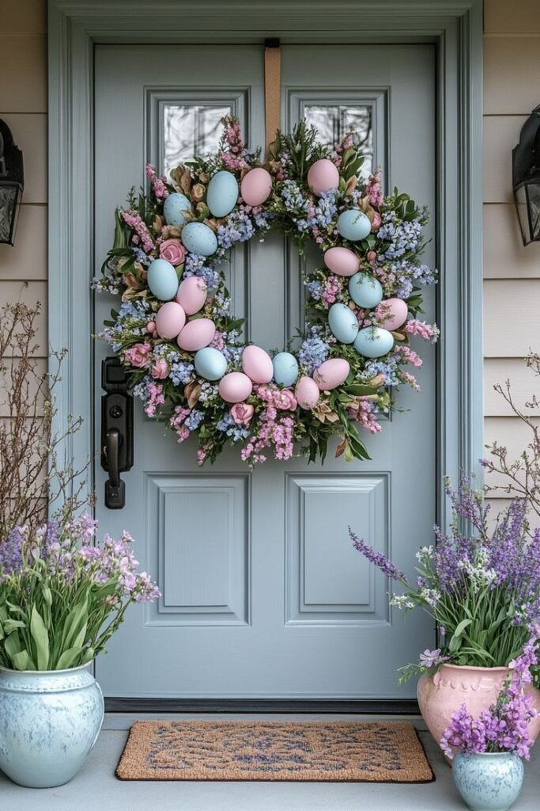
5. Lavender Field
Lavender brings a calm elegance that almost nothing else on this list matches. Faux lavender stems layered with soft greenery and tiny white blossoms, kept mostly to purple and green.
The overall feeling is genuinely serene, a strong fit for an entryway console just as much as a front door.
Purple tones have a way of elevating decor almost instantly, even in small doses like this.
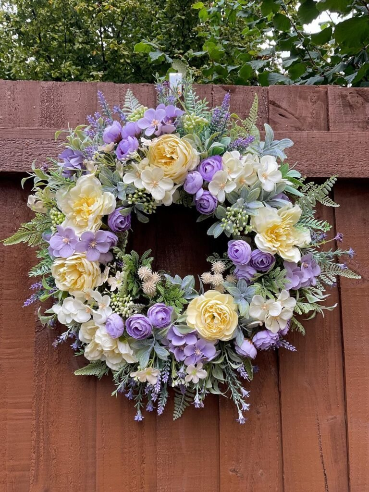
6. Bold Modern Geometric
Not everyone wants rustic twigs and bunny silhouettes. For clean lines instead, a thin metal geometric frame makes for a genuinely modern base.
Decorating only one side with florals and a few minimalist eggs keeps the geometry itself as the real focal point.
It suits a matte black door especially well, reading as intentional and designer-level rather than seasonal clutter.
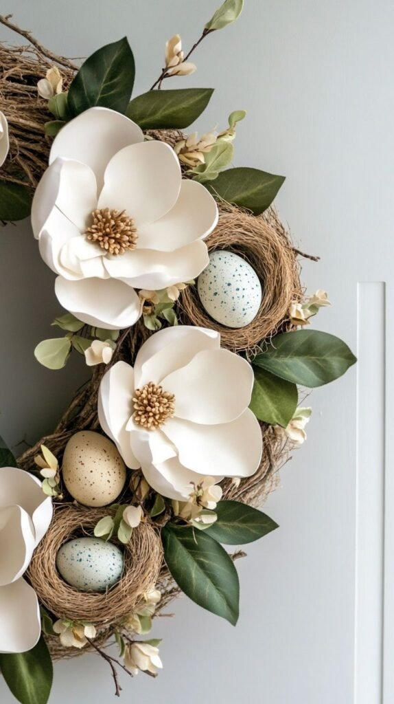
7. Vintage Lace and Floral
For anyone drawn to soft, romantic decor, this wreath feels pulled straight out of a cottage novel, delicate lace ribbon wrapped around the base, tucked with muted roses and baby's breath.
A tiny fabric bow finishes the softness without adding any extra weight to the design.
It suits a white or light gray door especially well, reading as dreamy without ever looking fragile.
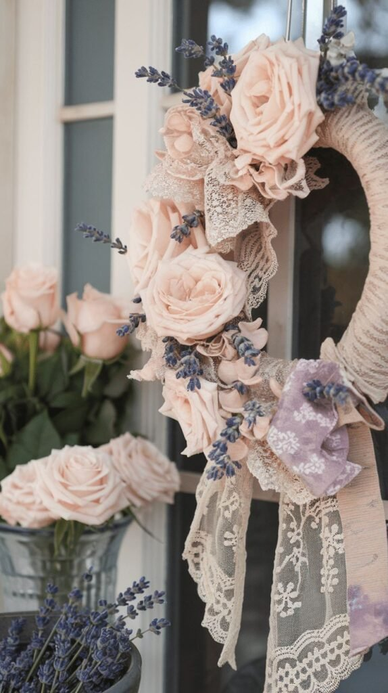
8. Tulip-Filled Spring Garden
Nothing announces spring quite as loudly as tulips. Vibrant faux tulips in soft pink, coral, yellow, and white, layered thickly around a grapevine base, let the florals take over entirely.
Everything else around them stays minimal on purpose, the tulips are the whole point.
Investing in genuinely good faux tulips pays off here. Cheap versions tend to droop and look sad within a season, while quality ones reuse for years.
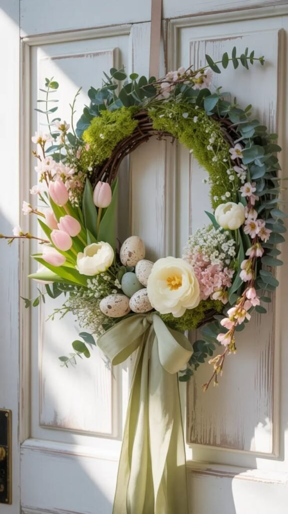
9. Elegant Neutral
For anyone who prefers understated decor, this wreath wins without much competition. Ivory florals, soft beige ribbon, muted greenery, and tiny speckled eggs in cream tones.
The whole effect reads as refined rather than seasonal-specific, which means it can stay up a little longer without feeling out of place.
It pairs especially well with gold door hardware, where the warm metal tones tie the whole look together.
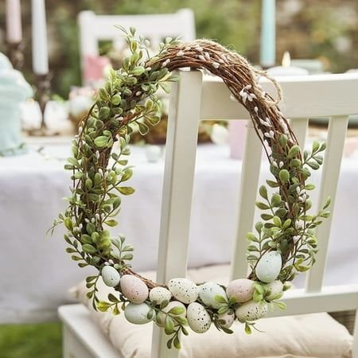
10. Carrot Patch
Yes, carrots, and somehow it works. Faux greenery layered with small decorative carrots tucked throughout, finished with a gingham bow for charm.
It sounds a little silly on paper. In practice, it reads as genuinely adorable.
This one's a strong pick for a household with kids, it tends to get noticed and smiled at more than almost any other style on this list.
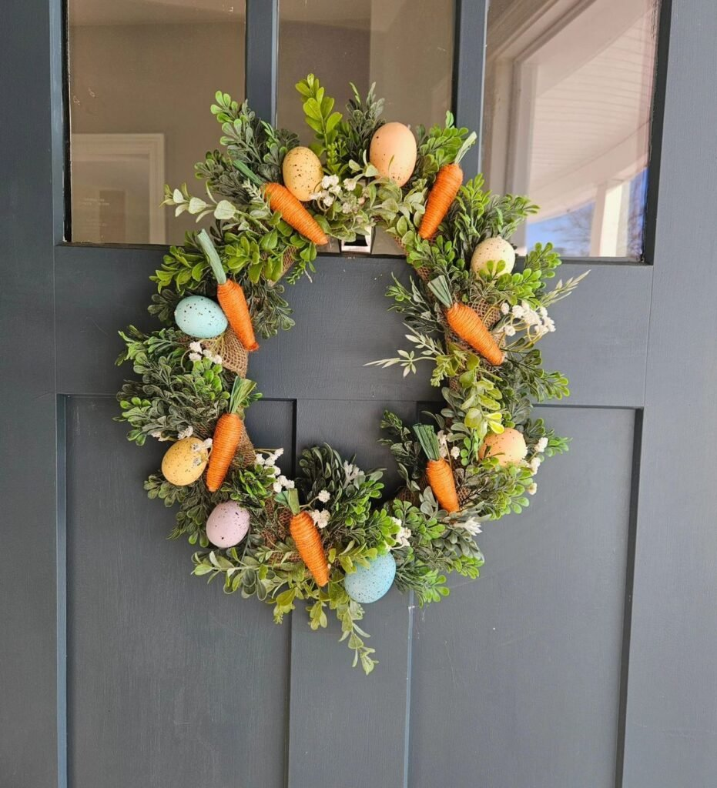
11. Monogram
For something more personal, a monogram wreath adds an initial right at the center of the design.
Florals wrap the outer edge, and a wooden or metal monogram letter anchors the middle, simple, custom, and immediately eye-catching.
This style consistently earns compliments. People respond to the personal touch, and it reads as genuinely intentional rather than generic.
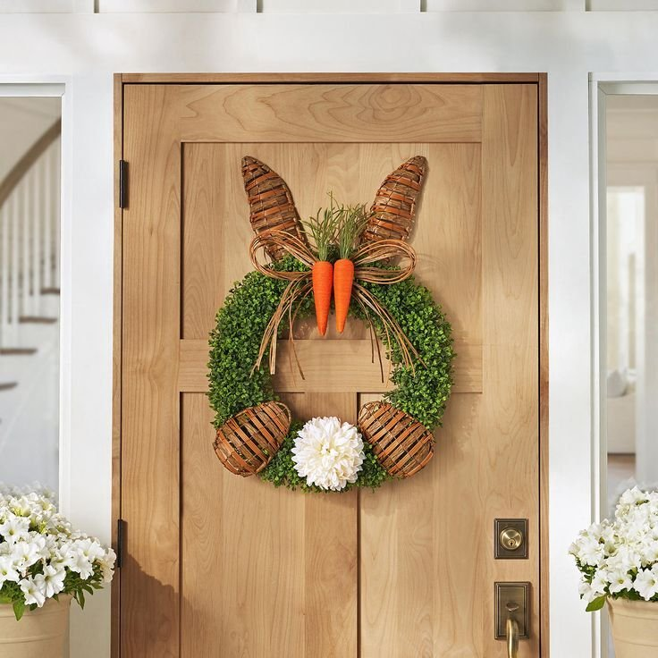
12. Rustic Moss and Twig
This one feels like it was found in a countryside cottage rather than built from a craft store run, natural twigs, faux moss, a few tiny white flowers, maybe a small bird's nest tucked in.
The overall effect reads as genuinely organic and earthy, nothing about it feels manufactured.
It blends especially well against a stone exterior, where the natural textures echo the materials already on the house.
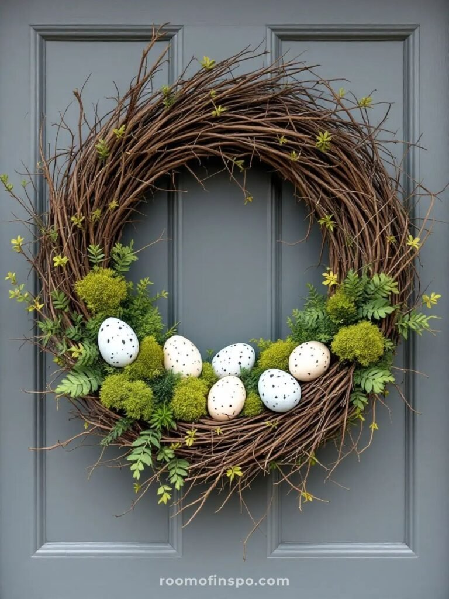
13. Whimsical Egg Explosion
For anyone ready to go fully bold, this wreath covers the entire base in colorful speckled eggs, pink, blue, yellow, mint, with florals peeking through for depth.
The effect reads as playful and genuinely joyful, the kind of wreath that makes people smile walking up to the door.
The one rule worth keeping in mind: controlled chaos looks fun, but overcrowding the base tips it into looking messy instead of festive.
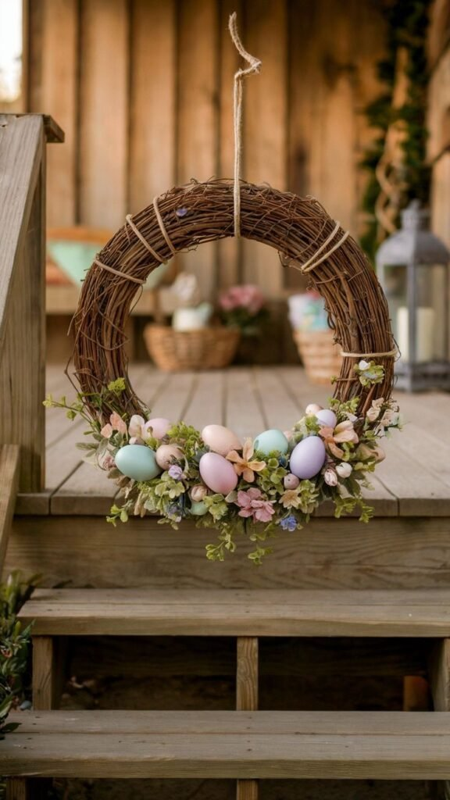
14. Minimalist Greenery
Not everyone wants a bunny explosion on their front door. This wreath keeps it deliberately simple, eucalyptus, olive branches, or boxwood, with a tiny cluster of white eggs for a subtle Easter nod.
That's genuinely the whole formula. No extra embellishment required.
It suits a black front door especially well, the contrast between the dark background and the muted greenery looks stunning without any color at all.
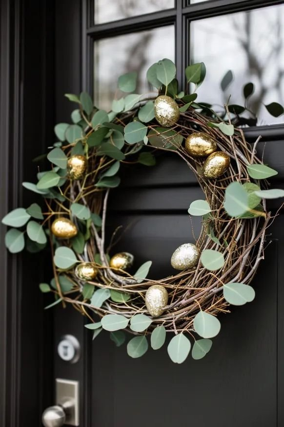
15. Farmhouse Bunny
This one leans fully into cozy charm. A grapevine or faux moss base, a wooden bunny silhouette in the center, and burlap ribbon wrapped loosely around one side deliver instant rustic warmth.
It's a strong fit for anyone whose home already leans toward shiplap and neutral throw pillows, the aesthetic carries straight through to the front door.
Nothing about it tries too hard. The charm comes from how unfussy the whole thing is.
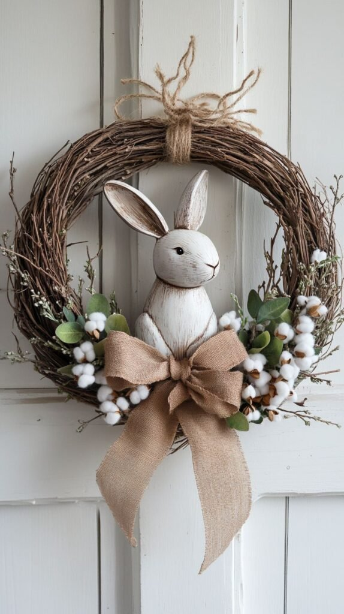
16. Classic Pastel Floral
To close the list with the one Easter wreath everyone already pictures: a grapevine base layered with soft pink peonies, white hydrangeas, and a hint of lavender.
A little greenery tucked in and a small bow in blush or cream round it out without ever feeling overdone.
It works because it's genuinely timeless, and it suits a traditional home especially well, welcoming without trying too hard to get there.
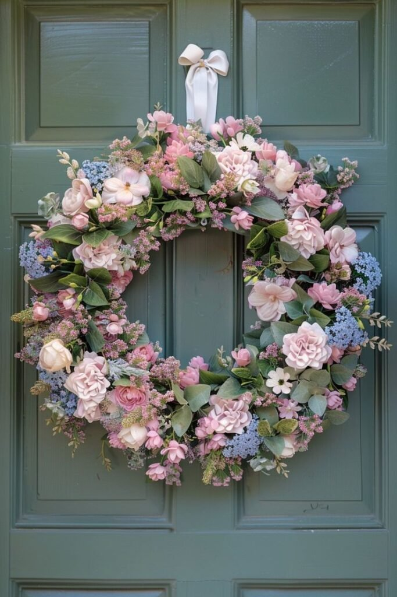
A Couple of Styling Basics
Hanging height matters more than people expect, centering the wreath slightly above the door's midpoint, roughly at eye level, reads as intentional. Too low looks awkward; too high looks disconnected from the rest of the door. Layering in a few other seasonal touches nearby, rather than letting the wreath float completely alone, helps it anchor the whole entryway instead of just sitting there as a single accent.
Protecting it from direct sunlight keeps the colors from fading fast, especially on a porch that gets real afternoon sun, UV-protected florals are worth the extra cost if that's the case. And storing it properly after the season, labeled clearly, saves real frustration the next time it comes back out of a box.
Final Thoughts
Sixteen wreaths, every style from rustic twigs to gold-accented luxe, and all of them capable of turning a forgettable front door into something people actually notice walking up.
Whatever direction feels right, bold with tulips and eggs, or elegant with gold and ivory, choosing it with intention is what makes the difference. A door that looks this considered tends to make the whole house feel a little more welcoming.
Start with the base that already matches the door's hardware and exterior color, then build the rest of the wreath around that one decision.